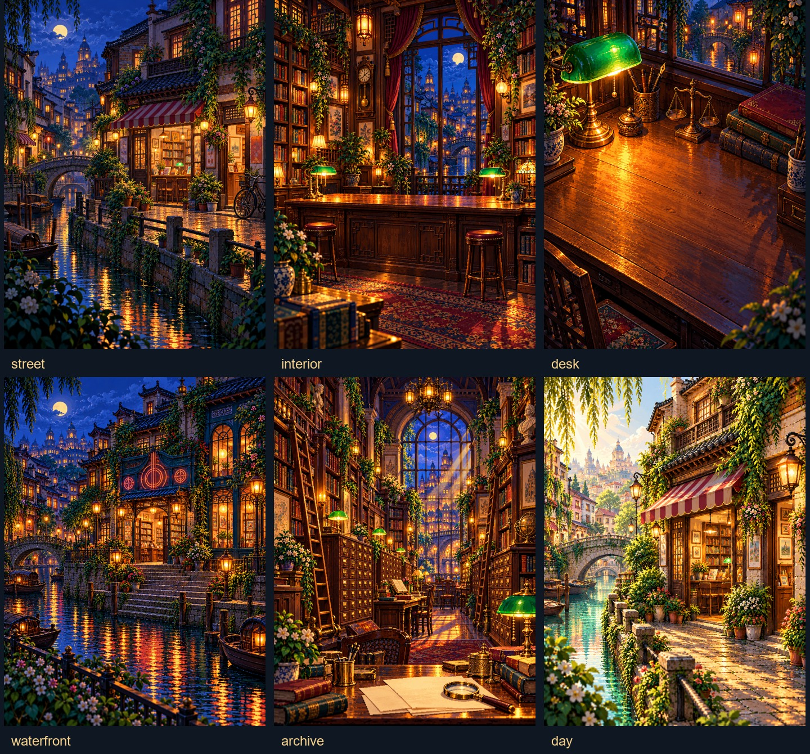

3:4 · 原比例对标
主文件2160×2880。内部画布1080×1440；输出尺寸不代表原生4K美术细节。
CAESAR / PIXEL SCENE MAP / 2026.10.29
同一街区，两位持有人；从过去的账单，走到今天的判断。完整环境、灯光、人物与道具分层，地图负责定位关系，近景负责解释。
COMPLETE FILM
播放器全部默认暂停、静音；页面嵌入的是无音轨预览。配音版在下载入口。
主文件2160×2880。内部画布1080×1440；输出尺寸不代表原生4K美术细节。
1080×1920。相机、人物落点、账单排列、地图旋转和字幕区域单独配置。
PROOF BEFORE FULL FILM
按 L1 / L2 / L3 的时间结构复现，全部是原创画面。技术和动作对齐不代表已经达到参考的美术质量。
SECOND CONFIGURATION
24秒《同一句未回复，三种解释》。从干净目录安装并渲染，没有重写场景运行时。它是静音编辑配置测试，不冒充另一模型的独立验收。
ASSET KIT

六张背景板；独立人物、前景、钟与账本透明图；地图、路线、纸张、字幕与局部水面为代码图层。建筑背景本身是合成板，并未拆成逐建筑 PSD。
本版更偏细密、写实的像素插画，参考更偏块面清楚的卡通场景；人物只有有限姿态，解释中仍有纸卡。已完成配置复用与双画幅交付，但不宣布“1:1通过”或“任意文章稳定高质量”。全程没有外放声音，也没有进行真人审听。
入口：scripts/pixel_scene.py prepare / render；检查：scripts/pixel_inspect.py；分支：feature/caesar-pixel。